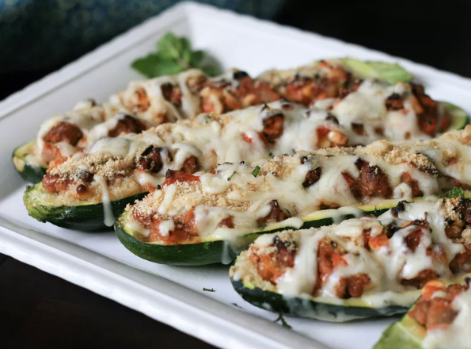

Stuffed Zucchini Recipe

DESCRIPTION
Here's a delicious way to solve the problem of those too-big zucchini ballooning in your garden at the end of the summer: zucchini boats baked and stuffed with lamb, feta, pine nuts, tomatoes, and other Mediterranean flavors!
----------------
Prep Time: 20 mins
Cook Time: 50 mins
Total Time: 1 hr 10 mins
Serving: 4
Yield: 4 stuffed zucchinis
----------------
INGREDIENTS
- 1 extra large zucchini, halved lengthwise
- 1 tablespoon olive oil
- 1 sweet onion, chopped
- 1 tablespoon chopped garlic
- 1 pound ground lamb
- 1 (16 ounce) can tomato sauce
- ¾ cup crumbled feta cheese
----------------
STEPS
- Preheat oven to 450 degrees F (230 degrees C).
- Use a melon baller to separate and remove seeds and pulp separately from the zucchini, carving out each half and leaving about a half-inch shell. Chop zucchini pulp into pieces about 1/4 inch in diameter. Discard seeds.
- Heat olive oil in a large skillet over medium heat. Cook and stir onion and garlic in hot oil until tender, about 5 minutes. Add ground lamb; continue to cook and stir until lamb is lightly browned, 5 to 7 minutes. Stir chopped zucchini into the lamb mixture. Reduce heat to medium-low. Simmer mixture until the zucchini is hot, about 3 minutes. Drain excess grease. Season lamb mixture with coarse salt and black pepper.
- Remove skillet from heat. Stir tomato sauce, tomatoes, feta cheese, pine nuts, and 1/4 cup mint leaves through the lamb mixture; spoon into the zucchini halves. Put stuffed zucchini halves into a large baking dish. Pour water into the baking dish.
- Bake in preheated oven for 30 minutes. Mix bread crumbs and mozzarella cheese in a bowl. Sprinkle 1/4 cup mint leaves over the zucchini and top with the bread crumb mixture. Continue baking until the top is crusty and browned, about 10 minutes more.